ProgrTest seche linge TERRA Fr
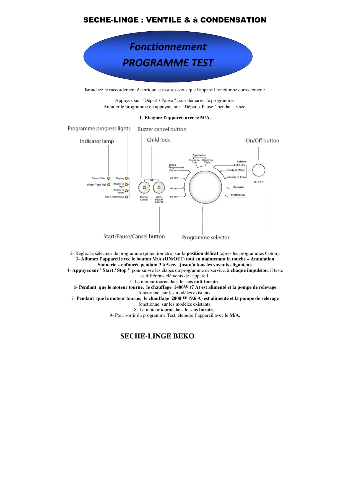
SECHE-LINGE : VENTILE & à CONDENSATIONSECHE-LINGE BEKOBranchez le raccordement électrique et assurez-vous que l'appareil fonctionne correctement:Appuyez sur "Départ / Pause " pour démarrer le programme.Annuler le programme en appuyant sur "Départ / Pause " pendant 3 sec.1- Éteignez l'appareil avec le M/A.2- Réglez le sélecteur de programme (potentiomètre) sur la position délicat (après les programmes Coton).3- Allumez l’appareil avec le bouton M/A (ON/OFF) tout en maintenant la touche « AnnulationSonnerie » enfoncée pendant 3 à 5sec. , jusqu'à tous les voyants clignotent.4- Appuyez sur "Start / Stop " pour suivre les étapes du programme de service, à chaque impulsion, il testeles différents éléments de l'appareil :5- Le moteur tourne dans le sens anti-horaire.6- Pendant que le moteur tourne, le chauffage 1400W (7 A) est alimenté et la pompe de relevagefonctionne, sur les modèles existants.7- Pendant que le moteur tourne, le chauffage 2000 W (9,6 A) est alimenté et la pompe de relevagefonctionne, sur les modèles existants.8- Le moteur tourne dans le sens horaire.9- Pour sortir du programme Test, éteindre l’appareil avec le M/A.FonctionnementPROGRAMME TEST
1 / 21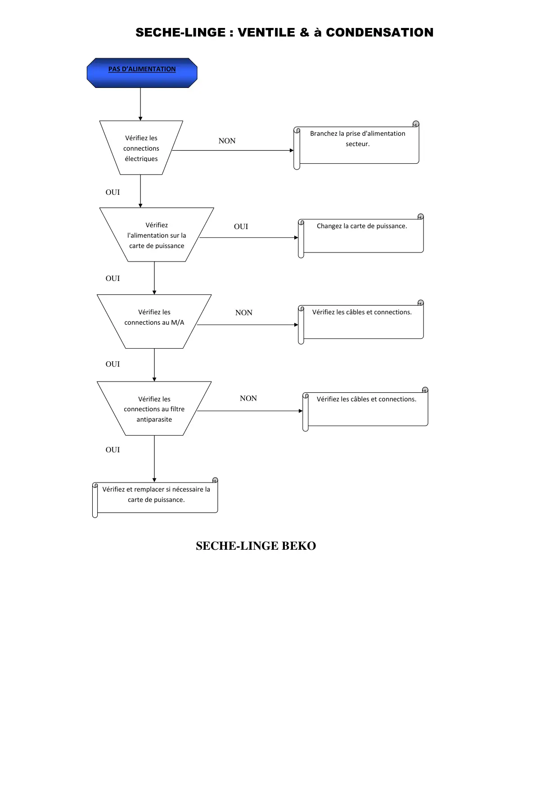
SECHE-LINGE : VENTILE & à CONDENSATIONSECHE-LINGE BEKONONOUIOUIOUINONOUINONOUIPAS D’ALIMENTATIONVérifiez lesconnectionsélectriquesBranchez la prise d'alimentationsecteur.Vérifiezl'alimentation sur lacarte de puissanceChangez la carte de puissance.Vérifiez lesconnections au M/AVérifiez les câbles et connections.Vérifiez lesconnections au filtreantiparasiteVérifiez les câbles et connections.Vérifiez et remplacer si nécessaire lacarte de puissance.
2 / 21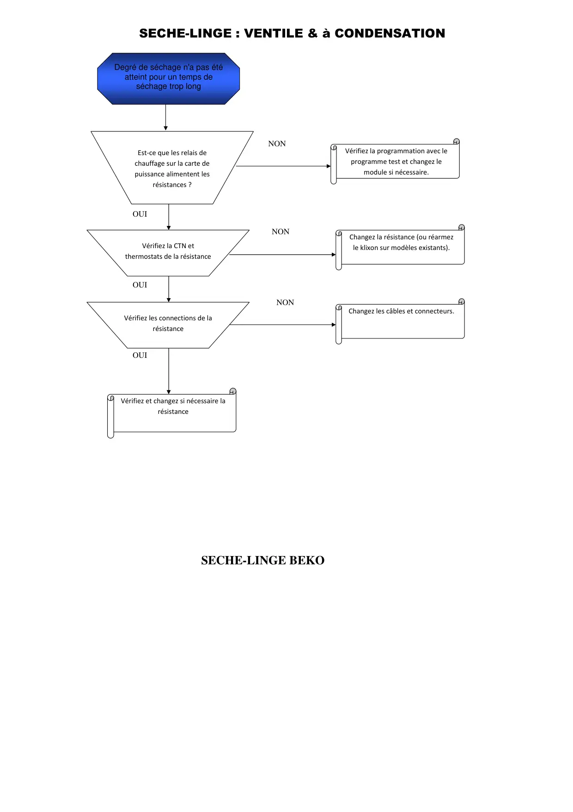
SECHE-LINGE : VENTILE & à CONDENSATIONSECHE-LINGE BEKONONOUINONOUINONOUIDegré de séchage n'a pas étéatteint pour un temps deséchage trop longEst-ce que les relais dechauffage sur la carte depuissance alimentent lesrésistances ?Vérifiez la programmation avec leprogramme test et changez lemodule si nécessaire.Vérifiez la CTN etthermostats de la résistanceChangez la résistance (ou réarmezle klixon sur modèles existants).Vérifiez les connections de larésistanceChangez les câbles et connecteurs.Vérifiez et changez si nécessaire larésistance
3 / 21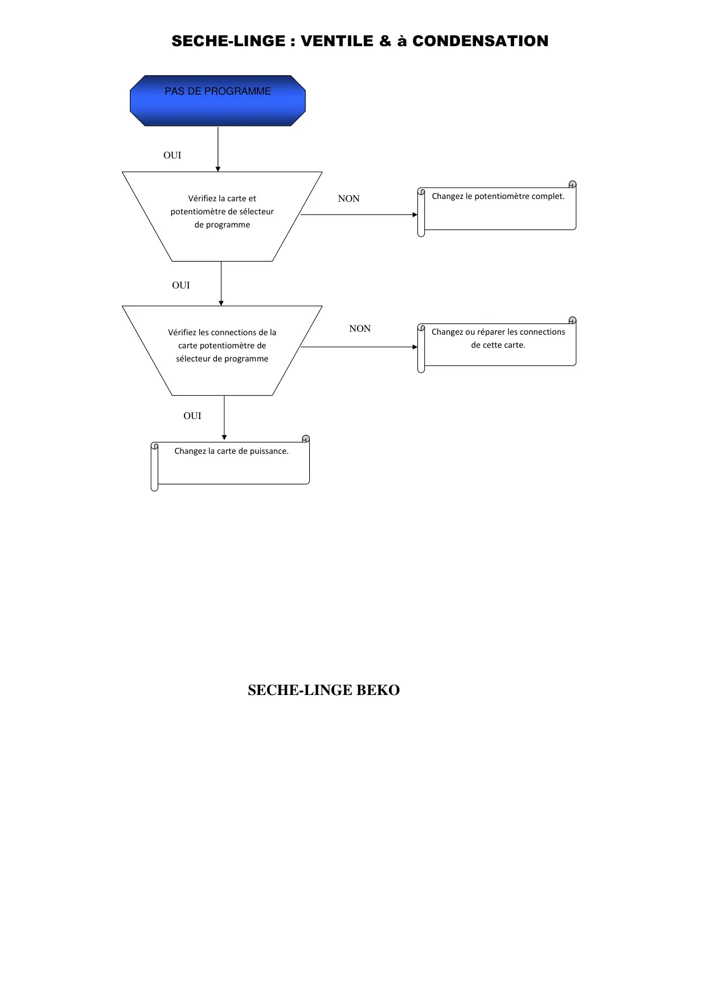
SECHE-LINGE : VENTILE & à CONDENSATIONSECHE-LINGE BEKOOUINONOUINONOUIPAS DE PROGRAMMEVérifiez la carte etpotentiomètre de sélecteurde programmeChangez le potentiomètre complet.Vérifiez les connections de lacarte potentiomètre desélecteur de programmeChangez ou réparer les connectionsde cette carte.Changez la carte de puissance.
4 / 21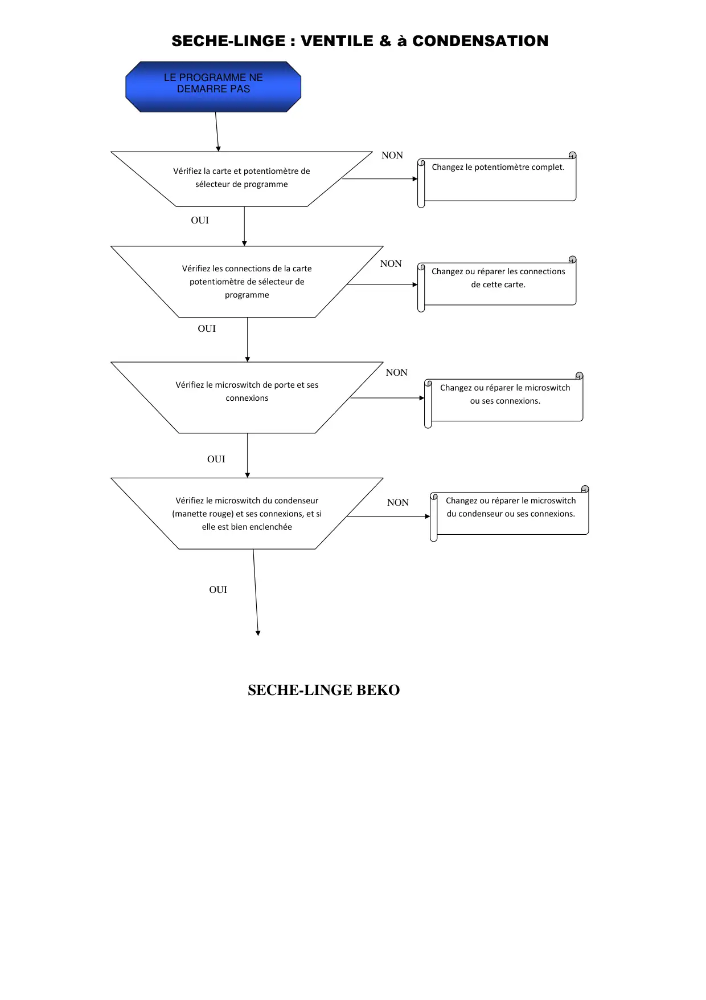
SECHE-LINGE : VENTILE & à CONDENSATIONSECHE-LINGE BEKONONOUINONOUINONOUINONOUILE PROGRAMME NEDEMARRE PASVérifiez les connections de la cartepotentiomètre de sélecteur deprogrammeChangez ou réparer les connectionsde cette carte.Vérifiez la carte et potentiomètre desélecteur de programmeChangez le potentiomètre complet.Vérifiez le microswitch de porte et sesconnexionsChangez ou réparer le microswitchou ses connexions.Vérifiez le microswitch du condenseur(manette rouge) et ses connexions, et sielle est bien enclenchéeChangez ou réparer le microswitchdu condenseur ou ses connexions.
5 / 21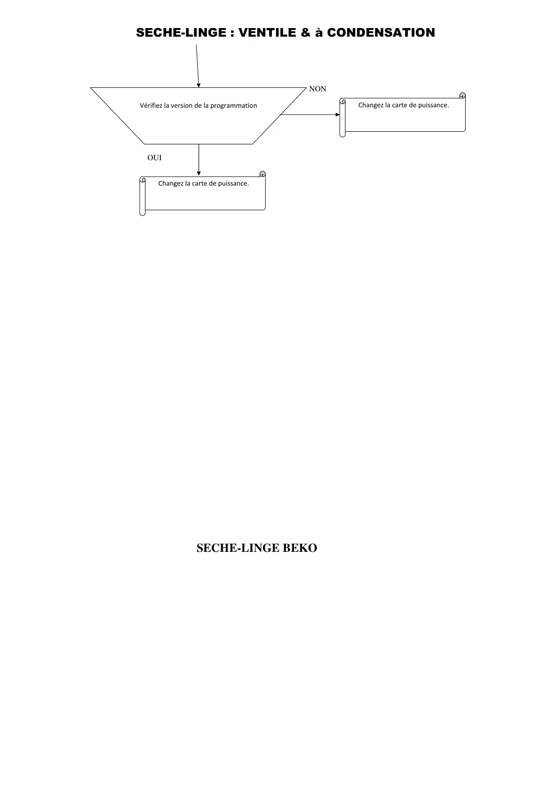
SECHE-LINGE : VENTILE & à CONDENSATIONSECHE-LINGE BEKONONOUIVérifiez la version de la programmationChangez la carte de puissance.Changez la carte de puissance.
6 / 21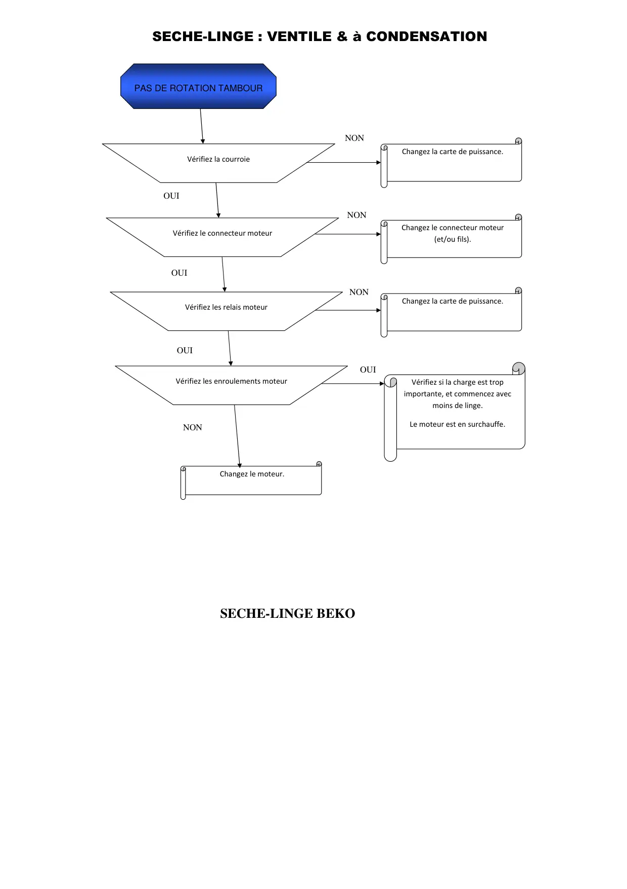
SECHE-LINGE : VENTILE & à CONDENSATIONSECHE-LINGE BEKONONOUINONOUINONOUIOUINONPAS DE ROTATION TAMBOURVérifiez la courroieChangez la carte de puissance.Vérifiez le connecteur moteurVérifiez les relais moteurVérifiez les enroulements moteurChangez le connecteur moteur(et/ou fils).Changez la carte de puissance.Vérifiez si la charge est tropimportante, et commencez avecmoins de linge.Le moteur est en surchauffe.Changez le moteur.
7 / 21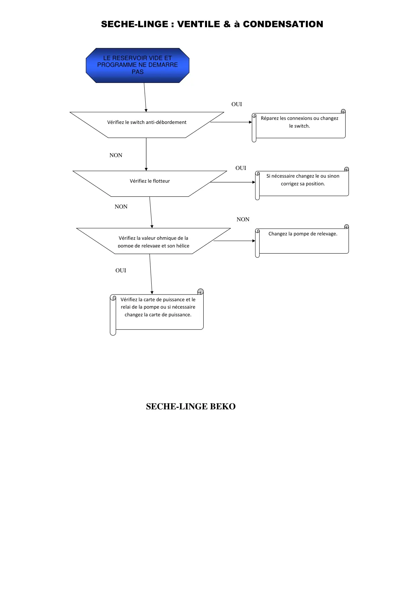
SECHE-LINGE : VENTILE & à CONDENSATIONSECHE-LINGE BEKOOUINONOUINONNONOUILE RESERVOIR VIDE ETPROGRAMME NE DEMARREPASVérifiez le switch anti-débordementVérifiez la valeur ohmique de lapompe de relevage et son héliceVérifiez le flotteurChangez la pompe de relevage.Vérifiez la carte de puissance et lerelai de la pompe ou si nécessairechangez la carte de puissance.Si nécessaire changez le ou sinoncorrigez sa position.Réparez les connexions ou changezle switch.
8 / 21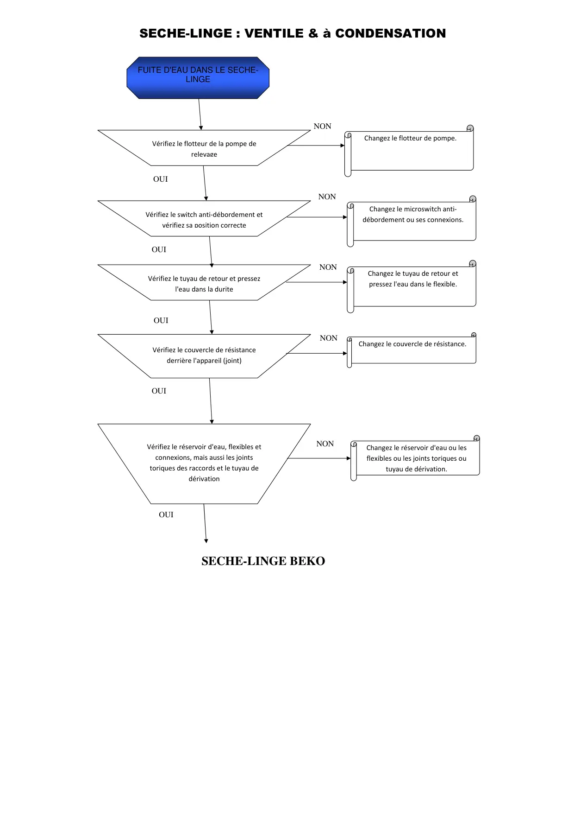
SECHE-LINGE : VENTILE & à CONDENSATIONSECHE-LINGE BEKONONOUINONOUINONOUINONOUINONOUIFUITE D'EAU DANS LE SECHE-LINGEVérifiez le tuyau de retour et pressezl'eau dans la duriteVérifiez le réservoir d'eau, flexibles etconnexions, mais aussi les jointstoriques des raccords et le tuyau dedérivationVérifiez le couvercle de résistancederrière l'appareil (joint)Vérifiez le switch anti-débordement etvérifiez sa position correcteVérifiez le flotteur de la pompe derelevageChangez le tuyau de retour etpressez l'eau dans le flexible.Changez le microswitch anti-débordement ou ses connexions.Changez le couvercle de résistance.Changez le réservoir d'eau ou lesflexibles ou les joints toriques outuyau de dérivation.Changez le flotteur de pompe.
9 / 21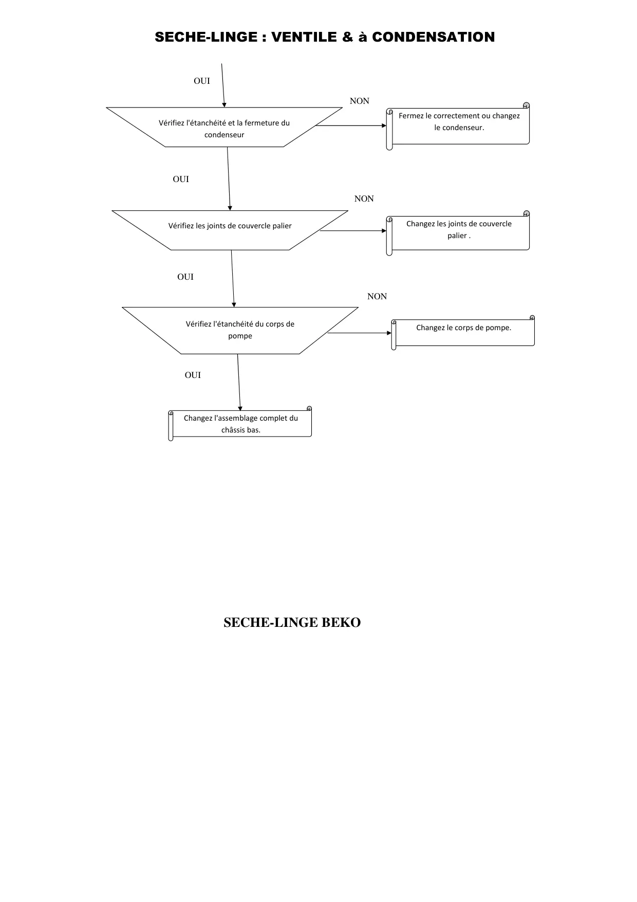
SECHE-LINGE : VENTILE & à CONDENSATIONSECHE-LINGE BEKOOUINONOUINONOUINONOUIVérifiez l'étanchéité et la fermeture ducondenseurVérifiez les joints de couvercle palierVérifiez l'étanchéité du corps depompeFermez le correctement ou changezle condenseur.Changez les joints de couverclepalier .Changez le corps de pompe.Changez l'assemblage complet duchâssis bas.
10 / 21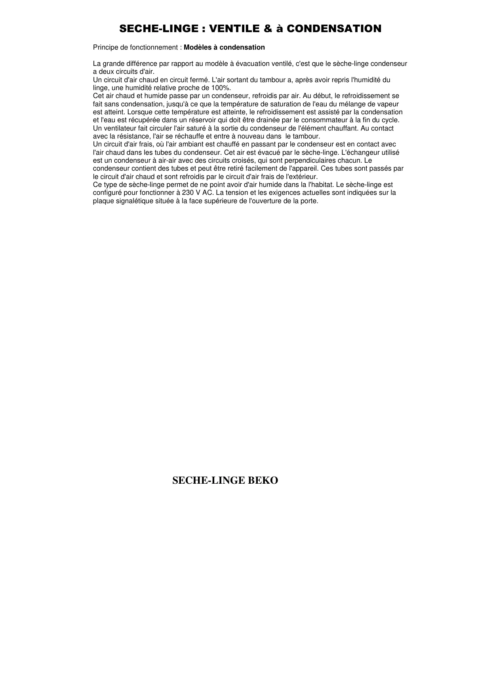
SECHE-LINGE : VENTILE & à CONDENSATIONSECHE-LINGE BEKOPrincipe de fonctionnement : Modèles à condensationLa grande différence par rapport au modèle à évacuation ventilé, c'est que le sèche-linge condenseura deux circuits d'air.Un circuit d'air chaud en circuit fermé. L'air sortant du tambour a, après avoir repris l'humidité dulinge, une humidité relative proche de 100%.Cet air chaud et humide passe par un condenseur, refroidis par air. Au début, le refroidissement sefait sans condensation, jusqu'à ce que la température de saturation de l'eau du mélange de vapeurest atteint. Lorsque cette température est atteinte, le refroidissement est assisté par la condensationet l'eau est récupérée dans un réservoir qui doit être drainée par le consommateur à la fin du cycle.Un ventilateur fait circuler l'air saturé à la sortie du condenseur de l'élément chauffant. Au contactavec la résistance, l'air se réchauffe et entre à nouveau dans le tambour.Un circuit d'air frais, où l'air ambiant est chauffé en passant par le condenseur est en contact avecl'air chaud dans les tubes du condenseur. Cet air est évacué par le sèche-linge. L'échangeur utiliséest un condenseur à air-air avec des circuits croisés, qui sont perpendiculaires chacun. Lecondenseur contient des tubes et peut être retiré facilement de l'appareil. Ces tubes sont passés parle circuit d'air chaud et sont refroidis par le circuit d'air frais de l'extérieur.Ce type de sèche-linge permet de ne point avoir d'air humide dans la l'habitat. Le sèche-linge estconfiguré pour fonctionner à 230 V AC. La tension et les exigences actuelles sont indiquées sur laplaque signalétique située à la face supérieure de l'ouverture de la porte.
11 / 21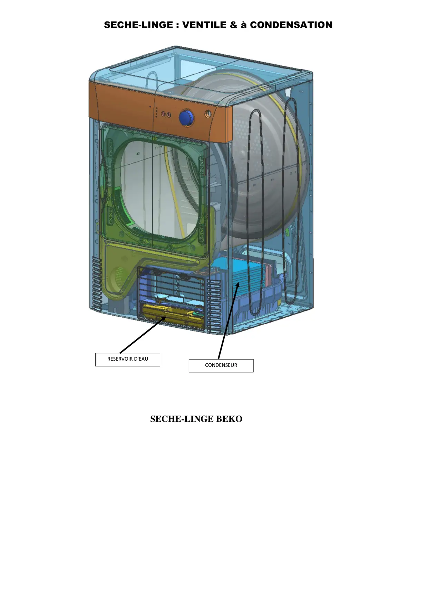
SECHE-LINGE : VENTILE & à CONDENSATIONSECHE-LINGE BEKORESERVOIR D'EAUCONDENSEUR
12 / 21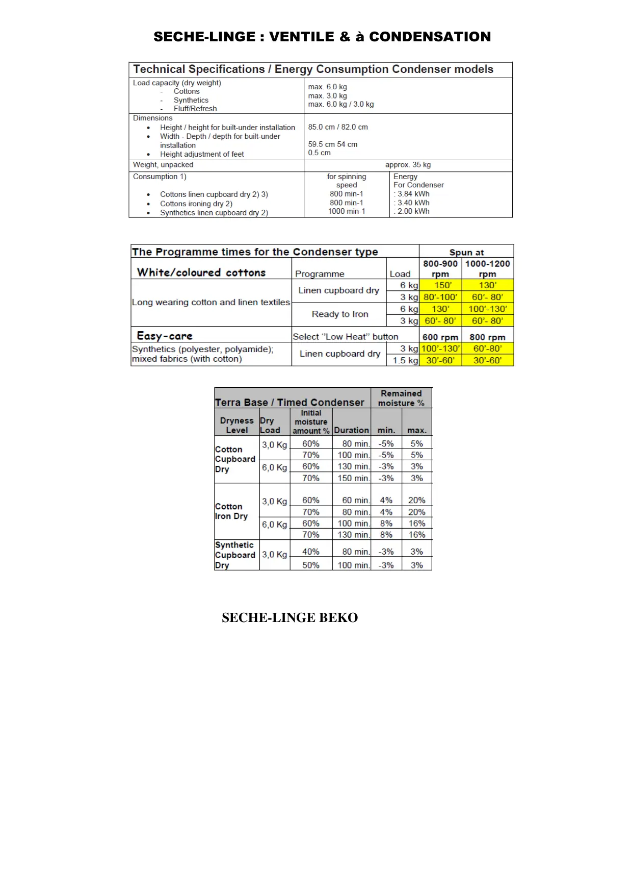
SECHE-LINGE : VENTILE & à CONDENSATIONSECHE-LINGE BEKO
13 / 21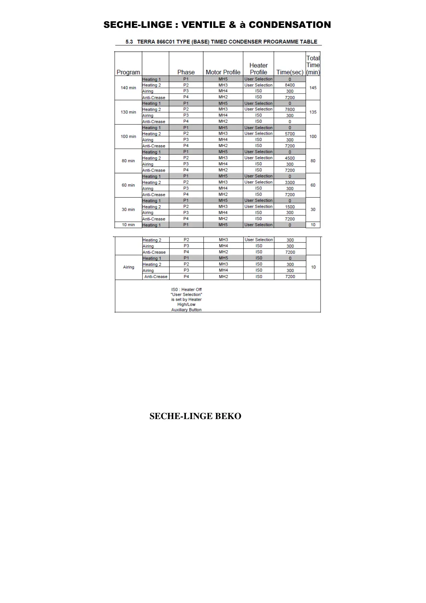
SECHE-LINGE : VENTILE & à CONDENSATIONSECHE-LINGE BEKO
14 / 21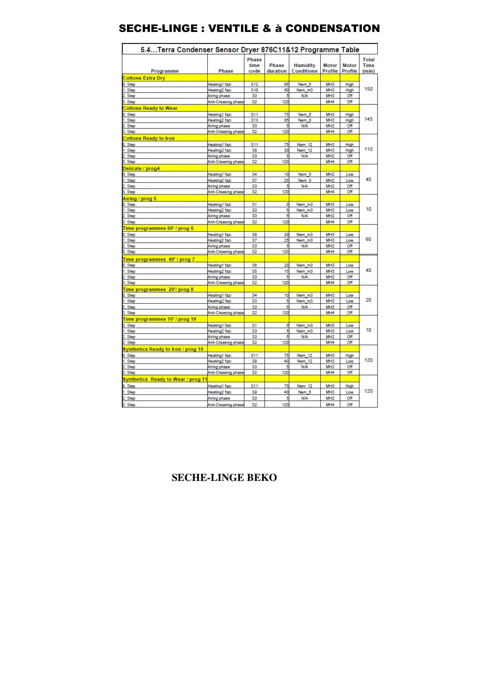
SECHE-LINGE : VENTILE & à CONDENSATIONSECHE-LINGE BEKO
15 / 21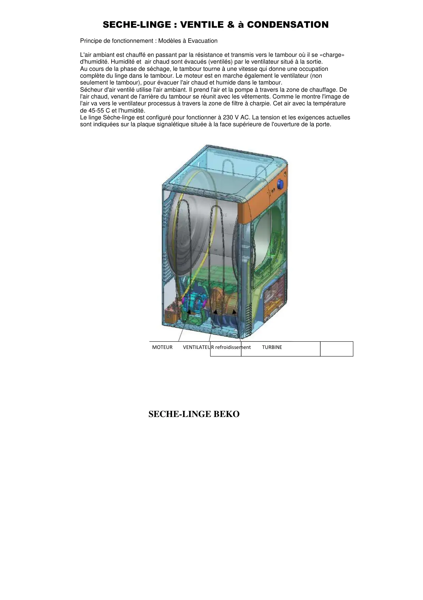
SECHE-LINGE : VENTILE & à CONDENSATIONSECHE-LINGE BEKOPrincipe de fonctionnement : Modèles à EvacuationL'air ambiant est chauffé en passant par la résistance et transmis vers le tambour où il se «charge»d'humidité. Humidité et air chaud sont évacués (ventilés) par le ventilateur situé à la sortie.Au cours de la phase de séchage, le tambour tourne à une vitesse qui donne une occupationcomplète du linge dans le tambour. Le moteur est en marche également le ventilateur (nonseulement le tambour), pour évacuer l'air chaud et humide dans le tambour.Sécheur d'air ventilé utilise l'air ambiant. Il prend l'air et la pompe à travers la zone de chauffage. Del'air chaud, venant de l'arrière du tambour se réunit avec les vêtements. Comme le montre l'image del'air va vers le ventilateur processus à travers la zone de filtre à charpie. Cet air avec la températurede 45-55 C et l'humidité.Le linge Sèche-linge est configuré pour fonctionner à 230 V AC. La tension et les exigences actuellessont indiquées sur la plaque signalétique située à la face supérieure de l'ouverture de la porte.MOTEURVENTILATEUR refroidissementTURBINE
16 / 21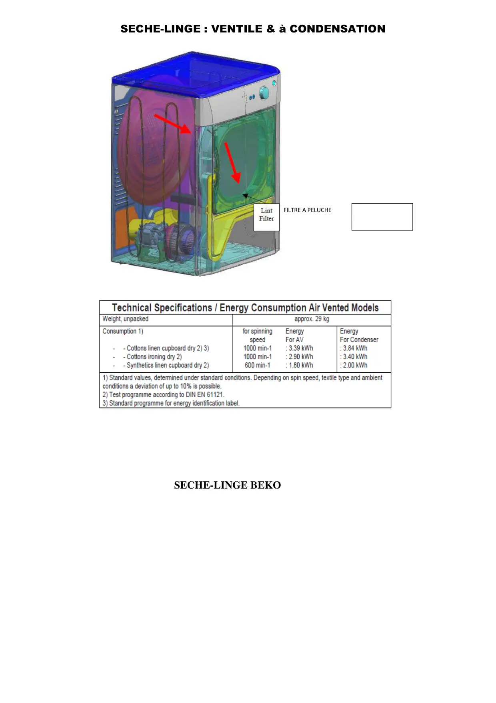
SECHE-LINGE : VENTILE & à CONDENSATIONSECHE-LINGE BEKOFILTRE A PELUCHE
17 / 21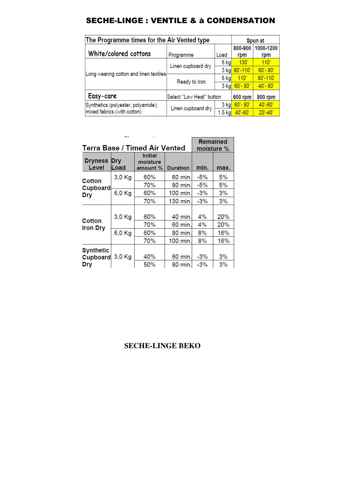
SECHE-LINGE : VENTILE & à CONDENSATIONSECHE-LINGE BEKO
18 / 21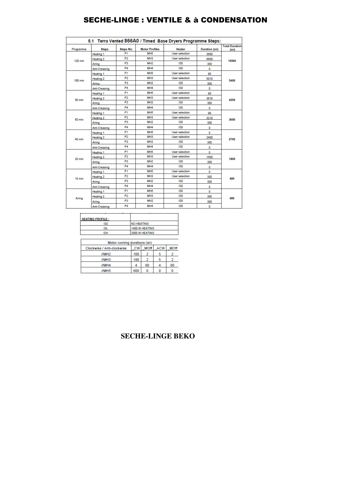
SECHE-LINGE : VENTILE & à CONDENSATIONSECHE-LINGE BEKO
19 / 21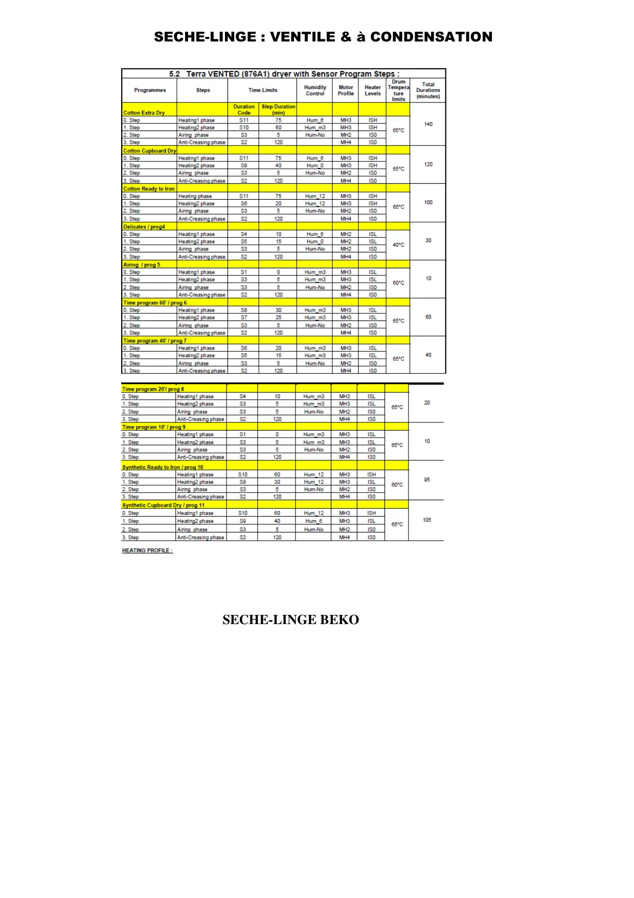
SECHE-LINGE : VENTILE & à CONDENSATIONSECHE-LINGE BEKO
20 / 21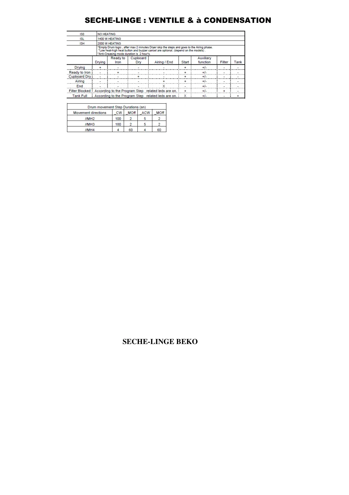
SECHE-LINGE : VENTILE & à CONDENSATIONSECHE-LINGE BEKO
21 / 21